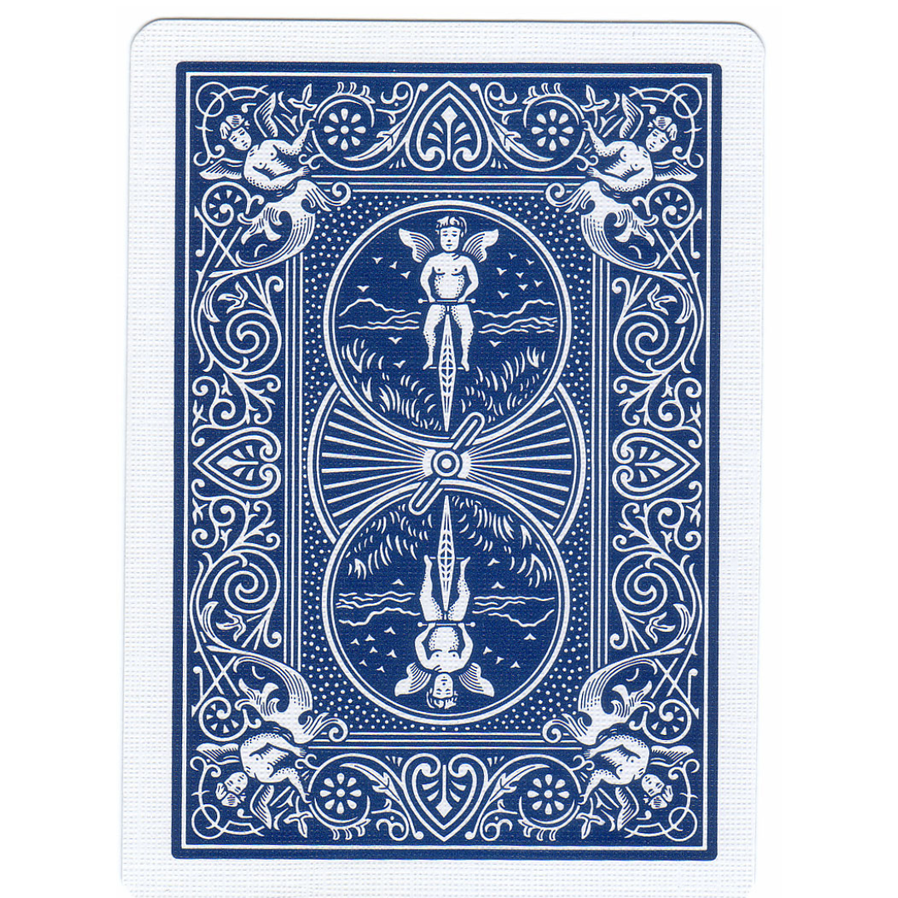

<!DOCTYPE html>
<html>
  <head>
    <style>
      .hide_cursor {
        cursor: none;
      }
    </style>
    <title>My experiment</title>
    <script src="jspsych/plugins/jspsych.js"></script>
    <script src="jspsych/plugins/plugin-instructions.js"></script>
    <script src="jspsych/plugins/plugin-html-button-response.js"></script>
    <script src="jspsych/plugins/plugin-survey-text.js"></script>
    <script src="jspsych/plugins/plugin-html-keyboard-response.js"></script>
    <script src="jspsych/plugins/plugin-survey-likert.js"></script>
    <script src="jspsych/plugins/plugin-fullscreen.js"></script>
    <script src="jspsych/plugins/plugin-preload.js"></script>
    <link rel="stylesheet" href="jspsych/css/jspsych.css">
  </head>

  <body></body>

  <script>
    // ====================================================
    // BASIC SETUP
    // ====================================================
    var data_folder = 'data/';

    function saveData(name, data){
      var xhr = new XMLHttpRequest();
      xhr.open('POST', 'write_data.php');
      xhr.setRequestHeader('Content-Type', 'application/json');
      xhr.send(JSON.stringify({filedata: data}));
    }

    var jsPsych = initJsPsych({
      on_finish: function() {
        saveData(data_folder+'All_data/all_data_sub_'+subject_id+".csv", jsPsych.data.get().csv());
      }
    });

    var timeline = [];

    // ----------- Subject properties -----------
    var subject_id = jsPsych.data.getURLVariable('participantId');
    var study_id = jsPsych.data.getURLVariable('assignmentId');
    var session_id = jsPsych.data.getURLVariable('projectId');

    jsPsych.data.addProperties({
      subject_id: subject_id,
      study_id: study_id,
      session_id: session_id,
    });

    // ====================================================
    // PRELOAD
    // ====================================================
    var preload = {
      type: jsPsychPreload,
      images: [
        'consent_form_2022.png',
        'images/blue_deck_1.png',
        'images/red_deck_2.png'
      ]
    };
    timeline.push(preload);

    // ====================================================
    // INTRO & CONSENT
    // ====================================================
    var trial_0 = {
      type: jsPsychInstructions,
      pages: [
        '<div style="font-family: Arial; padding: 100px; padding-top: 5%; text-align: left;">' +
        '<h2>Thank you for participating in this experiment!</h2>' +
        '<p>By clicking the "Begin Study" button, you will be taken to the study, including complete instructions and an informed consent agreement.</p>'
      ],
      show_clickable_nav: true
    };

    var trial_consent = {
      type: jsPsychInstructions,
      pages: [
        '<div style="text-align:center; font-family:Arial; font-size: 22px; padding-top:20px;">' +
        '<p>Please carefully read the consent form below before proceeding.</p>' +
        '</img>' +
        '</div>'
      ],
      show_clickable_nav: true
    };

    var trial_01 = {
      type: jsPsychFullscreen,
      fullscreen_mode: true
    };

    timeline.push(trial_0, trial_consent, trial_01);

    // ====================================================
    // INSTRUCTIONS
    // ====================================================
    var instructions_deck_choice = {
      type: jsPsychInstructions,
      pages: [
        '<div style="font-family: Arial; text-align: left; padding: 100px; padding-top: 5%;">' +
        '<h2>Instructions</h2>' +
        '<p>In this experiment, you will choose between two decks of cards: one <span style="color: red;">red</span> and one <span style="color: blue;">blue</span>.</p>' +
        '<p><b>After each choice, you will see a short sequence of sentences.</b></p>' +
        '<div style="border: 2px solid #333; border-radius: 12px; padding: 25px; margin: 35px 0; background-color: #f5f5f5;">' +
        '<p style="font-size: 22px; font-weight: bold; text-align: center; line-height: 1.6;">' +
        'One deck reveals a new sequence that is surprising but still connected to the events that came before.<br>' +
        'The other deck reveals a surprising sequence that is not connected to the previous events.' +
        '</p>' +
        '</div>' +
        '<p>As you go along, try to notice the differences between the two decks and choose the one that feels more engaging or meaningful to you.</p>' +
        '<p>There are no right or wrong answers. Simply follow your intuition.</p>' +
        '</div>'
      ],
      show_clickable_nav: true
    };
    timeline.push(instructions_deck_choice);

    // ====================================================
    // HELPER FUNCTIONS
    // ====================================================
    function createImageTrial(imagePath, seriesIndex, repetition, label) {
      return {
        type: jsPsychHtmlKeyboardResponse,
        stimulus: `<div style="display: flex; justify-content: center; align-items: center;">
                     
                   </div>`,
        choices: "NO_KEYS",
        trial_duration: 5000,
        data: { series: seriesIndex, repetition: repetition, phase: label }
      };
    }

    var choose_next_image = {
      type: jsPsychHtmlButtonResponse,
      stimulus: `
        <div style="display: flex; justify-content: center; align-items: center;">
          
          
        </div>`,
      choices: ['deck 1', 'deck 2'],
      on_finish: function(data) {
        data.choice = data.response;
      }
    };

    var clean_deck = [ createImageTrial('images/other/blank.png', 0, 0, 'blank') ];

    // ====================================================
    // BLOCK CREATION (A–B–C → CHOICE → D–E–F)
    // ====================================================
    function createCausalBlock(seriesIndex, semanticIndex, repetition) {
      return [
        // --- Stage 1: A, B, C ---
        createImageTrial(`images/causal/causal_series_${seriesIndex}/causal_series_${seriesIndex}_a.png`, seriesIndex, repetition, 'A'),
        createImageTrial(`images/causal/causal_series_${seriesIndex}/causal_series_${seriesIndex}_b.png`, seriesIndex, repetition, 'B'),
        createImageTrial(`images/causal/causal_series_${seriesIndex}/causal_series_${seriesIndex}_c.png`, seriesIndex, repetition, 'C'),

        // --- Choice ---
        Object.assign({}, choose_next_image, { data: { series: seriesIndex, repetition: repetition, phase: 'choice' } }),

        // --- Stage 2: Conditional D–E–F ---
        {
          timeline: [
            {
              conditional_function: function() {
                return jsPsych.data.getLastTrialData().values()[0].response == 0;
              },
              timeline: [
                createImageTrial(`images/causal/causal_series_${seriesIndex}/causal_series_${seriesIndex}_d.png`, seriesIndex, repetition, 'D'),
                createImageTrial(`images/causal/causal_series_${seriesIndex}/causal_series_${seriesIndex}_e.png`, seriesIndex, repetition, 'E'),
                createImageTrial(`images/causal/causal_series_${seriesIndex}/causal_series_${seriesIndex}_f.png`, seriesIndex, repetition, 'F')
              ]
            },
            {
              conditional_function: function() {
                return jsPsych.data.getLastTrialData().values()[0].response == 1;
              },
              timeline: [
                createImageTrial(`images/semantic/semantic_series_${semanticIndex}/semantic_series_${semanticIndex}_d.png`, seriesIndex, repetition, 'D'),
                createImageTrial(`images/semantic/semantic_series_${semanticIndex}/semantic_series_${semanticIndex}_e.png`, seriesIndex, repetition, 'E'),
                createImageTrial(`images/semantic/semantic_series_${semanticIndex}/semantic_series_${semanticIndex}_f.png`, seriesIndex, repetition, 'F')
              ]
            }
          ]
        },

        // --- Question 1: Surprise ---
        {
          type: jsPsychSurveyLikert,
          questions: [
            {
              prompt: "How surprising did you find the last set of sentences?",
              labels: [
                "1 - Not at all surprising",
                "2",
                "3",
                "4",
                "5 - Extremely surprising"
              ],
              required: true
            }
          ],
          data: { series: seriesIndex, repetition: repetition, phase: 'surprise_rating' }
        },

        // --- Question 2: Enjoyment ---
        {
          type: jsPsychSurveyLikert,
          questions: [
            {
              prompt: "How much did you enjoy this sequence?",
              labels: [
                "1 - Not at all",
                "2",
                "3",
                "4",
                "5 - Very much"
              ],
              required: true
            }
          ],
          data: { series: seriesIndex, repetition: repetition, phase: 'enjoyment_rating' }
        },

        ...clean_deck
      ];
    }

    // ====================================================
    // BLOCK RANDOMIZATION AND DUPLICATION
    // ====================================================
    var causal_blocks = [];
    for (let i = 1; i <= 10; i++) {
      causal_blocks.push(createCausalBlock(i, i, 1));
    }

    // Duplicate each block once
    var doubled_blocks = [];
    causal_blocks.forEach((block, i) => {
      doubled_blocks.push(block);
      doubled_blocks.push(createCausalBlock(i + 1, i + 1, 2));
    });

    function shuffleArray(array) {
      for (let i = array.length - 1; i > 0; i--) {
        const j = Math.floor(Math.random() * (i + 1));
        [array[i], array[j]] = [array[j], array[i]];
      }
      return array;
    }

    var randomized_causal_blocks = shuffleArray(doubled_blocks);

    randomized_causal_blocks.forEach(block => {
      timeline.push(...block);
    });

    // ====================================================
    // POST QUESTIONS
    // ====================================================
    var trial_difference_between_decks = {
      type: jsPsychSurveyText,
      questions: [{prompt: 'Can you describe the difference between the two decks of cards?'}]
    };

    var trial_deck_color = {
      type: jsPsychHtmlButtonResponse,
      stimulus: 'Which color deck do the following sentences continue the story from?',
      choices: ['Blue', 'Red']
    };

    var trial_deck_color_not_following = {
      type: jsPsychHtmlButtonResponse,
      stimulus: 'Which color deck do the following sentences NOT follow the story from?',
      choices: ['Blue', 'Red']
    };

    var trial_deck_preference = {
      type: jsPsychHtmlButtonResponse,
      stimulus: 'Which type of deck did you prefer overall?',
      choices: [
        'The red deck, which showed a series of unrelated events',
        'The blue deck, which showed a connected and coherent story'
      ]
    };

    timeline.push(
      trial_difference_between_decks,
      trial_deck_color,
      trial_deck_color_not_following,
      trial_deck_preference
    );

    // ====================================================
    // DEMOGRAPHICS
    // ====================================================
    var trial_101 = {
      type: jsPsychSurveyText,
      questions: [
        {prompt: 'Please insert your gender (MALE / FEMALE / OTHER)'},
        {prompt: 'Please insert your age'}
      ]
    };
    timeline.push(trial_101);

    // ====================================================
    // END SCREEN
    // ====================================================
    var trial_102 = {
      type: jsPsychInstructions,
      pages: [
        '<span style="color: black; font-size: 24px">You have completed the experiment.' + 
        '<br/>The completion code is : 85B28EDEFF <br/>Thank you for your participation!</span>'
      ],
      show_clickable_nav: true
    };
    timeline.push(trial_102);

    // ====================================================
    // RUN EXPERIMENT
    // ====================================================
    jsPsych.run(timeline);
  </script>
</html>
